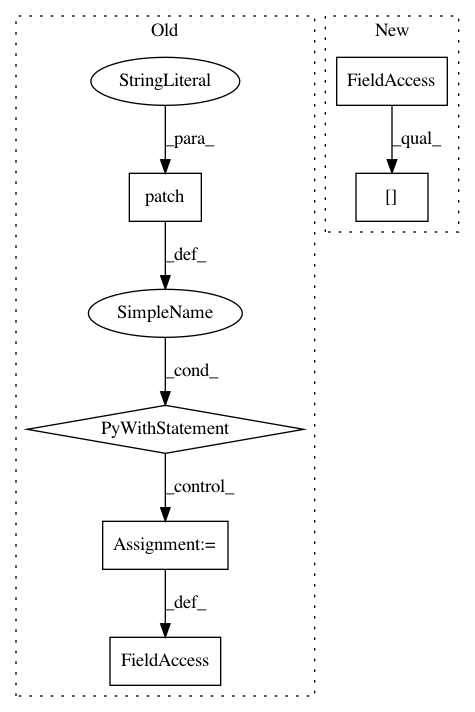

06e9433720845ab9f12e7ea0d8a8982123f093c6,tests/autologging/fixtures.py,,test_mode_off,#,8
Before Change
@pytest.fixture
def test_mode_off():
with mock.patch("mlflow.utils.autologging_utils._is_testing") as testing_mock:
testing_mock.return_value = False
assert not autologging_utils._is_testing()
yield
After Change
def test_mode_off():
try:
prev_env_var_value = os.environ.pop(_AUTOLOGGING_TEST_MODE_ENV_VAR, None)
os.environ[_AUTOLOGGING_TEST_MODE_ENV_VAR] = "false"
assert not _is_testing()
yield
finally:
In pattern: SUPERPATTERN
Frequency: 3
Non-data size: 6
Instances
Project Name: mlflow/mlflow
Commit Name: 06e9433720845ab9f12e7ea0d8a8982123f093c6
Time: 2020-12-18
Author: 39497902+dbczumar@users.noreply.github.com
File Name: tests/autologging/fixtures.py
Class Name:
Method Name: test_mode_off
Project Name: markovmodel/PyEMMA
Commit Name: 3bb4e7c9d8148da426cba84f884b7b59d44d074a
Time: 2016-08-22
Author: m.scherer@fu-berlin.de
File Name: pyemma/coordinates/tests/test_traj_info_cache.py
Class Name: TestTrajectoryInfoCache
Method Name: test_no_sqlite
Project Name: mlflow/mlflow
Commit Name: 06e9433720845ab9f12e7ea0d8a8982123f093c6
Time: 2020-12-18
Author: 39497902+dbczumar@users.noreply.github.com
File Name: tests/autologging/fixtures.py
Class Name:
Method Name: test_mode_on